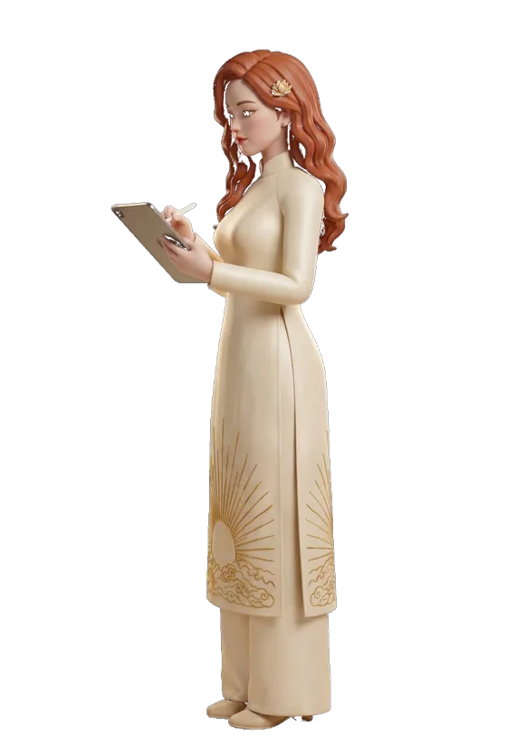

«Je m'appelle Hương» - chọn nơi muốn ghé“Je m'appelle Hương” - pick a place to visit« Je m'appelle Hương » - choisissez une étape
Bấm một biển - Hương AI sẽ đạp xe đưa bạn đến khu tương ứng. Đây là phần sáng tạo của trang; hồ sơ học thuật nằm ở trang chủ.Click a sign and Huong AI rides there. This is the creative half of the site; the academic profile lives on the home page.Cliquez sur une enseigne et Hương IA vous y emmène. Voici la moitié créative du site ; le profil académique est sur la page d'accueil.
← Về trang học thuậtBack to the academic homeRetour à la page académiqueNhững nơi có thể ghéPlaces you can visitLieux à visiter
Trang viên 3D3D clay estateDomaine 3D
Khu vườn đất sét dựng bằng WebGL: đi dạo, nhận nhiệm vụ, sưu tầm vật phẩm và nghe nhạc nền theo từng khu.A clay garden built in WebGL: walk around, pick up quests and items, and hear ambient music that changes by area.Un jardin d'argile en WebGL : promenade, quêtes, objets et musique d'ambiance par zone.
Vào trang viên →Enter the estate →Entrer →Trò chơi Sử ViệtVietnamese-history gamesJeux d'histoire
Vân Đồn (1149) - xây thương cảng quốc tế đầu tiên của Đại Việt; Bắc Hải Đảo (1780) - giao thương và hải chiến trên vịnh Bắc Bộ.Vân Đồn (1149) - build Đại Việt's first international trading port; Bắc Hải Đảo (1780) - trade and naval combat in the Gulf of Tonkin.Vân Đồn (1149) et Bắc Hải Đảo (1780) : commerce et batailles navales.
Vào cổng trò chơi ↗Enter the portal ↗Entrer ↗Nhật ký sáng tạoCreative journalJournal créatif
Ghi chép quá trình dựng trang, viết nhạc và làm phần mềm - phần hậu trường của cả hệ sinh thái.Notes on building the site, writing the songs and shipping the software - the backstage of the whole ecosystem.Notes sur la fabrication du site, des chansons et des logiciels.
Đọc nhật ký →Read the journal →Lire →Blog
Tin tức về nghiên cứu, phần mềm và các học phần - cập nhật theo tuần.News on research, software and courses - updated weekly.Actualités sur la recherche, les logiciels et les cours.
Đọc blog →Read the blog →Lire le blog →Sổ lưu niệmGuest bookLivre d'or
Ai ghé qua khu vườn, để lại đôi dòng cho chủ nhà - không cần tài khoản gì cả.If you have wandered through the garden, leave a few words for its keeper - no account of any kind needed.Si vous avez traversé le jardin, laissez quelques mots - aucun compte n'est nécessaire.
Ký vào sổ →Sign the book →Signer →Hương AI
Nhân vật 3D trong tà áo dài trắng - gương mặt dẫn đường của hệ sinh thái số: dẫn tour bằng giọng nói trong EnQuiz, đồng hành trong M-AIDA và BizOn.A 3D character in a white áo dài - the guide across the digital ecosystem: voice-guided tours in EnQuiz, a companion in M-AIDA and BizOn.Un personnage 3D en áo dài blanc, guide de tout l'écosystème numérique.
Hương AI được nặn bằng đất sét: áo dài trắng, sen trên tay, một ánh đèn studio duy nhất. Cùng một chất liệu ấy trở lại trong từng thẻ và từng nút trên trang.Huong AI is modelled in clay: a white áo dài, a lotus in hand, a single studio light. The same material comes back in every card and button on the site.Hương IA est modelée en argile : áo dài blanc, lotus à la main, une seule lumière de studio.
Các tư thế bên dưới được dùng trong EnQuiz, M-AIDA, BizOn, ComDraft và trang âm nhạc.The poses below are the ones used across EnQuiz, M-AIDA, BizOn, ComDraft and the music page.Les poses ci-dessous sont utilisées dans EnQuiz, M-AIDA, BizOn, ComDraft et la page musique.



Nơi mọi thứ được nặn raWhere the pieces are madeOù tout est modelé
Trang này dựng trên một ý: đất sét là vật liệu, không phải sân khấu. Mỗi nhân vật, mỗi thẻ trên trang đều bắt đầu từ một khối đất trên bàn.The whole site rests on one idea: clay is a material, not a stage set. Every character and every card starts as a lump of clay on a table.Tout le site repose sur une idée : l'argile est une matière, pas un décor.
Bài hát và lời dẫnSongs and narrationChansons et narration
Phòng nhạcMusic roomSalle de musique
Album «Je m'appelle Hương» kèm lời, các bản thu khác, và liên kết tới nhạc chủ đề M-AIDA, BizOn.The album «Je m'appelle Hương» with lyrics, other recordings, and links to the M-AIDA and BizOn theme music.Compositions liées à l'écosystème : M-AIDA, BizOn et morceaux personnels.
Nghe nhạc →Listen →Écouter →Phòng thu lời dẫnNarration studioStudio de narration
Thu và nghe lại lời dẫn tour ba thứ tiếng dùng cho vườn số.Record and review the three-language tour narration used across the garden.Enregistrer la narration du tour en trois langues.
Vào phòng thu →Enter the studio →Entrer →Quả cầu dữ liệu Ngân hàng Thế giớiA live World Bank globeUn globe de données
Số liệu tải trực tiếp từ World Bank Open Data cho các nền kinh tế xuất hiện trong luận án. Kéo quả cầu, chọn chỉ số và quốc gia để so sánh.Figures fetched live from World Bank Open Data for the economies studied in the dissertation. Spin the globe, pick an indicator and compare countries.Données en direct de la Banque mondiale pour les économies étudiées. Tournez le globe et comparez.